At a glance
Customer widget SharpTalk server Agent console
─────────────── ──────────────── ─────────────
[Talk to an agent] or AI ──▶ Show consult category card
handoff
"What do you need help with?"
picks (Customer Services) ──▶ Check routing rules top to bottom
Consult category = Customer Services ?
Customer › Region = South ? (hotel sign-in info)
→ first rule where everything matches
→ online agent in that rule's unit × label
"I'll connect you with our ◀─ Assign ──▶ 🔔 Alarm popup "Assigned: me"
○○ team" [Open chat] → respond| Term | Meaning |
|---|---|
| Consult category | The topic the customer picks in the widget (e.g. Customer Services, Business Support). Operators create them and decide which are shown |
| Unit | The agent's team (one unit per person). E.g. North (Hanoi), South (Ho Chi Minh City) |
| Label | The agent's job tags (several allowed). E.g. CS, Sales. An agent needs the Counsels label to handle live chat |
| Routing rule | A "consult category + customer information (region etc.) → unit × label" bundle. Checked top to bottom; the first rule where everything matches is used |
| Region | The customer's (hotel's) location: North, North Center, Central, South Center, South. Sent by the host app with the sign-in info, or filled in from the province name |
| Assigned agents | Who gets the chat when no rule matches (top of the Agent handoff tab). Leave empty to alert every agent |
Setup ① Agents, units and labels
(console [Users & Labels] — master)
We recommend picking a unit × label in routing rules rather than individual people. When people change, the rules don't need editing.
2.1 Inviting agents and acceptance
- [Invite user] → enter email, choose rank, labels and unit → invite
- When the invitee signs in for the first time with the temporary password, their status becomes
active - Check labels, unit and status in the list
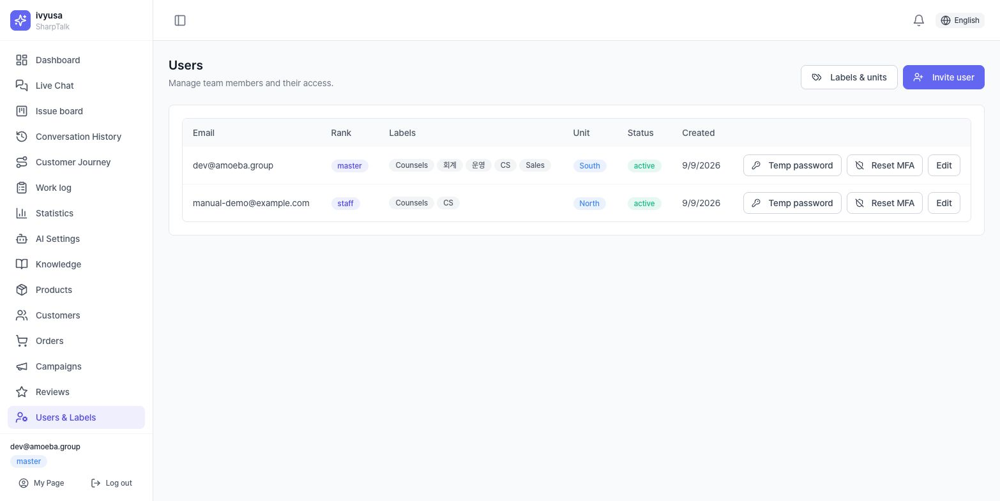
If a rule's unit has 0 active agents, that rule is skipped (warning in §4.4).
2.2 Creating units and labels
[Labels & units] → add by code and name on the Job labels / Units tab. The code can't be changed once created; the name can be changed any time.
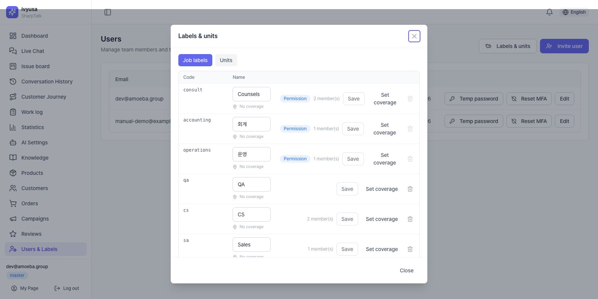
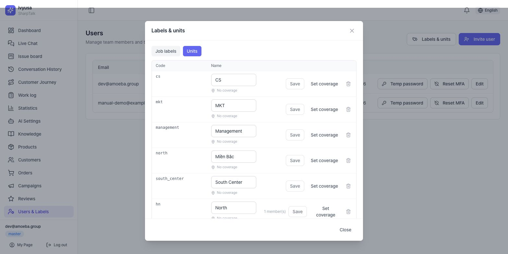
Consult, Accounting and Operations are built-in labels tied to permissions and can't be deleted. For routing, create separate labels such as CS and Sales so they don't get mixed up with permissions.
2.3 Assigning units and labels to agents
Click [Edit] in the list → check Job labels, pick a Unit, and save. To handle live chat an agent must also have the Counsels label.
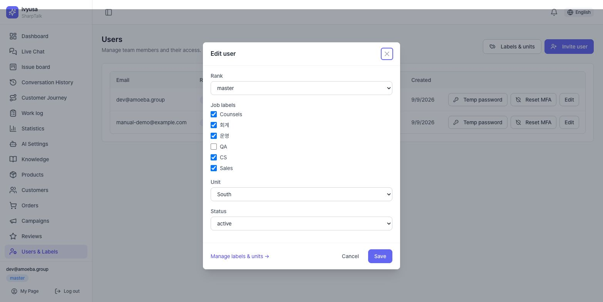
Setup ② Consult categories
([Tenant Settings] → Agent handoff tab → [Manage consult categories] in the routing rules header)
- In the bottom row, enter a code (letters, digits, _) and a name, leave Show to customers checked, and click [Add]
- In each row's ▸ Per-language names, enter the name for each customer language (empty = the default name)
- Set what customers should see to Shown and internal ones to Hidden, then click [Save changes]
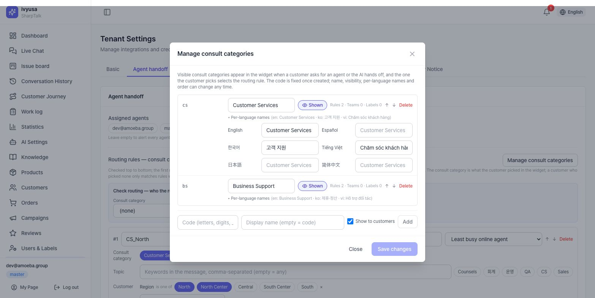
- The code can't be changed once created (rules reference it by code). Name, order and visibility can be changed any time.
- A consult category used by a rule, unit or label can't be deleted; you're told where it's used.
- If no consult category is Shown, the widget shows no card and connects directly.
Setup ③ Routing rules
*([Tenant Settings] → Agent handoff tab → Routing rules — consult category × topic)*
4.1 Creating a rule
[Add rule] → each rule sets the following.
| Field | What it sets | Example (CS_South) |
|---|---|---|
| Name | Name shown in logs and alarms | CS_South |
| Assignment | Least busy online agent / Alert the whole group | Least busy online agent |
| Consult category | The value the customer picked (empty = any) | Customer Services |
| Topic | Question keywords (empty = any) | — |
| Customer | Region, province, language etc. (empty = any) | Region = South Center, South |
| People | Group assignment (unit × label) or specific people | Unit South × Label CS |
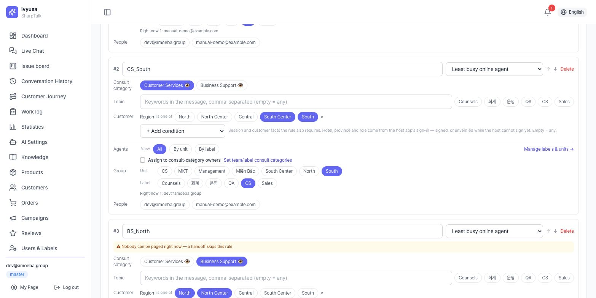
They only match conversations handed off by a policy force-handoff (deny) rule. Pick agent-group labels under People › Group assignment › Label below.
4.2 Rule order and the default rule
Rules are checked top to bottom, and the first rule where all conditions match is used. Reorder with ↑↓. This guide's example uses these 5 rules.
| # | Rule | Consult category | Region | People |
|---|---|---|---|---|
| 1 | CS_North | Customer Services | North, North Center | Unit North × CS |
| 2 | CS_South | Customer Services | South Center, South | Unit South × CS |
| 3 | BS_North | Business Support | North, North Center | Unit North × Sales |
| 4 | BS_South | Business Support | South Center, South | Unit South × Sales |
| 5 | Default | (any) | (any) | Label CS |
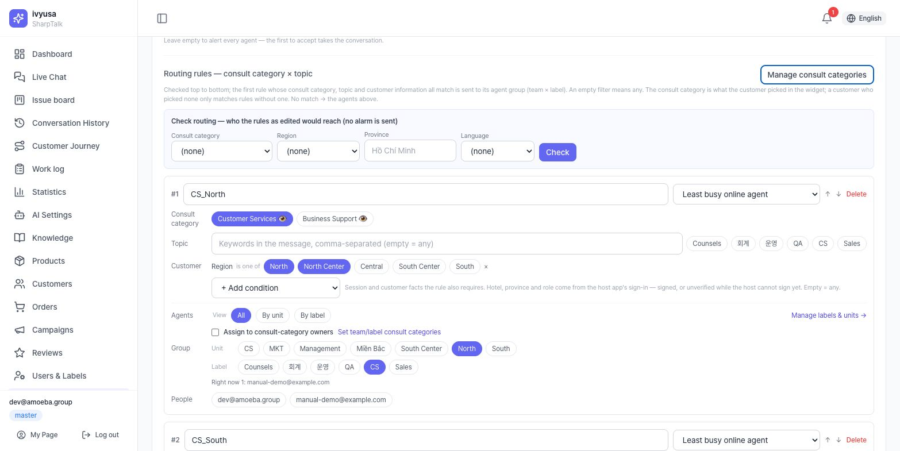
Put a default rule with no conditions at the bottom. Customers who didn't pick a consult category, or whose region is unknown, still go to a set person (without it, the *Assigned agents*; without those, an alarm to everyone).
4.3 Check routing — test before saving
Enter a consult category, region, province and language in the Check routing box above the rules and click [Check]. It shows who would be connected using the rules as currently edited (unsaved), and why rules were skipped. No alarm is sent.
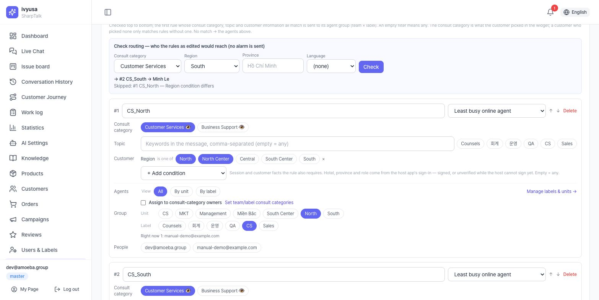
When you're done checking, click [Save] at the bottom of the card.
4.4 Reading the warnings
Yellow warnings at the top of a rule card don't block saving, but they mean the rule won't assign anyone as it stands.
| Warning | Meaning | Fix |
|---|---|---|
| The topic label (…) filter only matches conversations handed off by a policy (deny) rule… | Label chip used in the Topic row by mistake | Clear it in the Topic row; pick under People › Label |
| The name mentions a region but there is no region/province condition | Customers from every region match | Add Customer › Region |
| Nobody can be paged right now (n invited, not yet active) | No active agent in the unit × label | Ask them to accept the invite; check label and unit assignments |
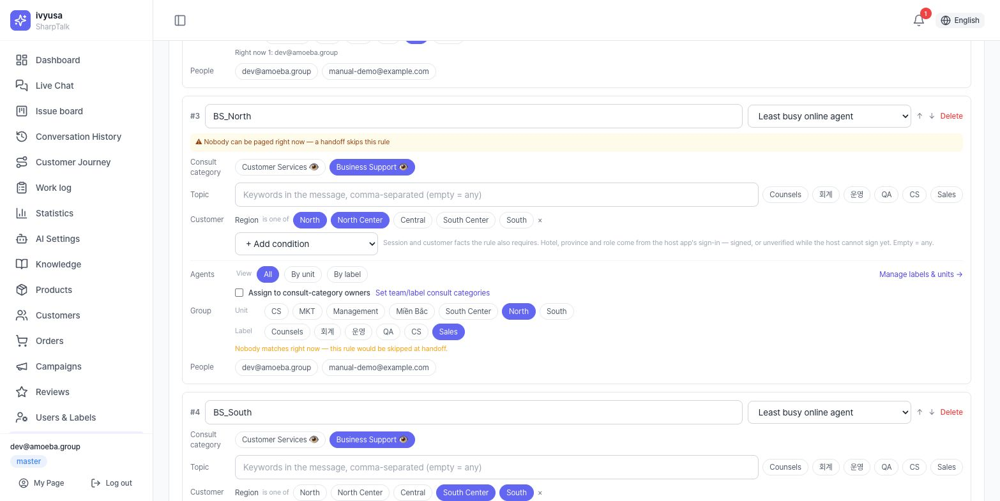
Customer view — requesting an agent and choosing a consult category
There are two ways a customer reaches an agent, and both show the same consult category card.
5.1 When the customer taps [Talk to an agent]
When the customer taps the Talk to an agent chip below an answer (or Chat with an agent on the contact card, or a scenario's agent handoff button), a card appears first instead of connecting right away.
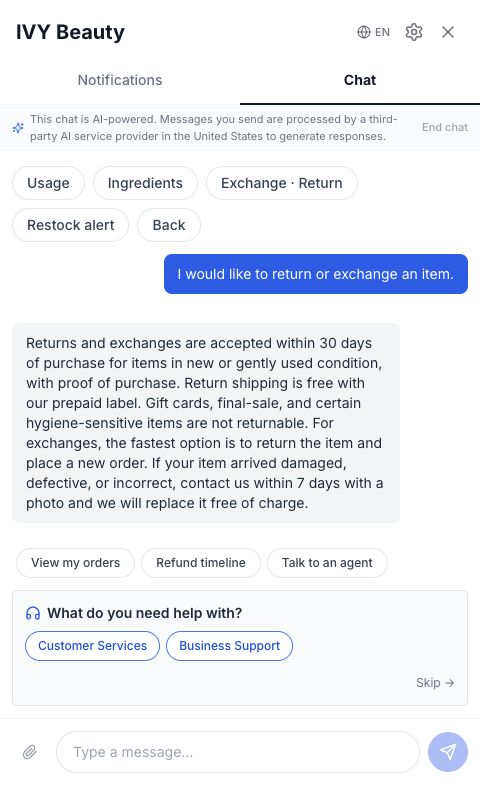
When the customer picks a consult category, routing rules are matched with that value, the line "Got it — I'll connect you with our ○○ team. Please wait a moment." is added to the chat, and the chat goes into waiting.
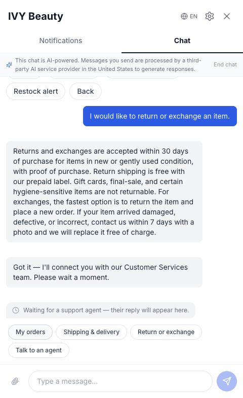
5.2 When the AI hands off to an agent
If the AI can't find a confident answer, or the customer says "Connect me to an agent", the AI pages an agent right away and shows the same card below its notice. When the customer picks, if no one has accepted yet, the chat is re-routed to that consult category's group (the first alarm is cleared).
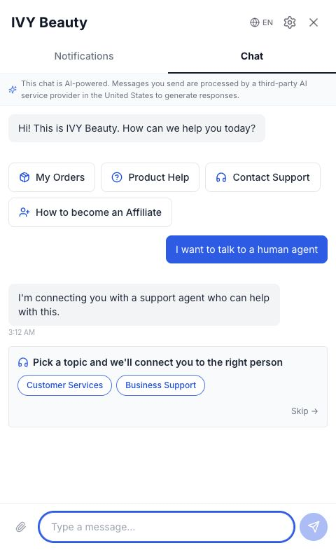
- [Skip]: connects as before without picking (using rules with no consult category condition).
- The card appears only once per conversation.
- The names on the card are the per-language names for the customer's language.
Routing decision — who gets it
With the example rules (§4.2) and agents (Linh Tran = unit North · CS / Minh Le = unit South · CS · Sales):
| Customer (hotel region) | Consult category picked | Matching rule | Who gets it |
|---|---|---|---|
| Saigon Riverside Hotel (South) | Customer Services | #2 CS_South | Minh Le |
| Hanoi Garden Hotel (North) | Customer Services | #1 CS_North | Linh Tran |
| Hanoi Garden Hotel (North) | Business Support | #3 BS_North → 0 people, skipped → #5 Default | Least busy agent with the CS label |
| Region unknown | (Skip) | #5 Default | Least busy agent with the CS label |
Rules to know:
- The consult category condition looks only at what the customer picked. A customer who picked nothing only matches rules with an empty consult category.
- Region is the hotel's region sent by the host app (e.g. Go2Joy HA) with the sign-in info. If no region comes but a province name does, it's filled in from the tenant's region map (province → region).
- Even if a rule matches, if it has 0 online, active agents, the next rule is tried.
- When the customer picks a consult category, the rules take precedence over previous agent first. If they don't pick, the agent who handled the same account's previous chat gets it first, as long as that agent is among this assignment's candidates.
- Outside business hours (when business hours are set), the request goes to the Off-hours email instead of agents.
Agent view — alarms
7.1 Alarms assigned to me
Wherever you are in the console, a Chat escalation popup appears within 10 seconds. It shows the hotel, region, consult category, Assigned: me, the rule name, the reason, and the customer's last message.
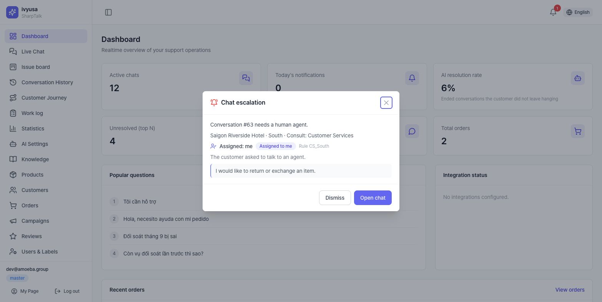
- [Open chat]: goes to the conversation and acknowledges it (stops reminders).
- [Dismiss]: hides it on your screen only (read). It isn't an acknowledgement, so unaccepted reminders continue.
7.2 Alarms assigned to another agent
All agents see alarms. An alarm assigned to someone else is marked Assigned to someone else, and opening it doesn't turn off that agent's alarm.
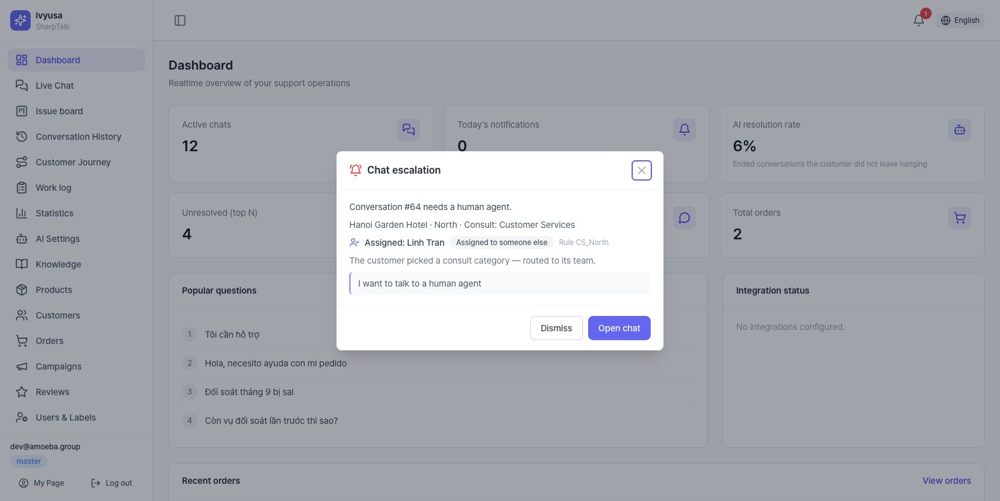
7.3 🔔 and the Alarm center
The header 🔔 shows the number of unread alarms. Click it for recent alarms; click View all to open the Alarm center (/live-chat/alerts). Filter by All / Assigned to me / Everyone, status, period and consult category; click a row to go to the conversation.
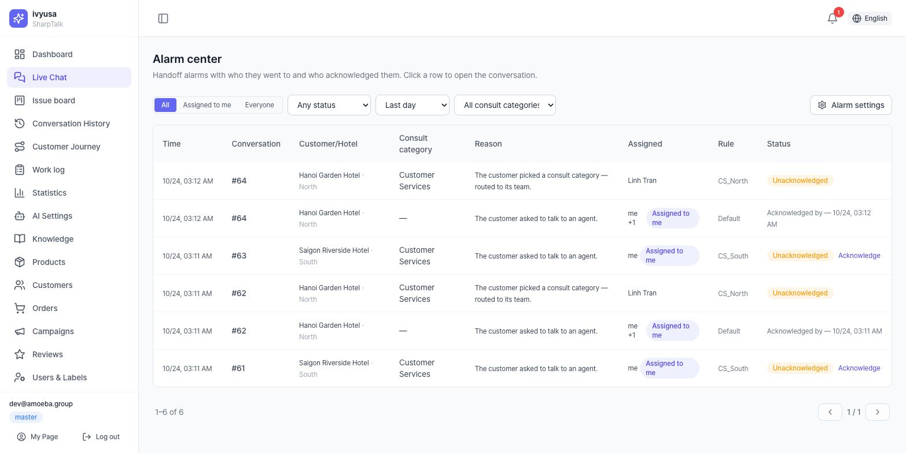
Responding — Open chat
In the live chat conversation opened via [Open chat], the header shows the hotel info, region and a Consult: Customer Services badge, and the chat keeps the system line "Got it — I'll connect you with our Customer Services team. Please wait a moment." Click [Accept] to start responding.
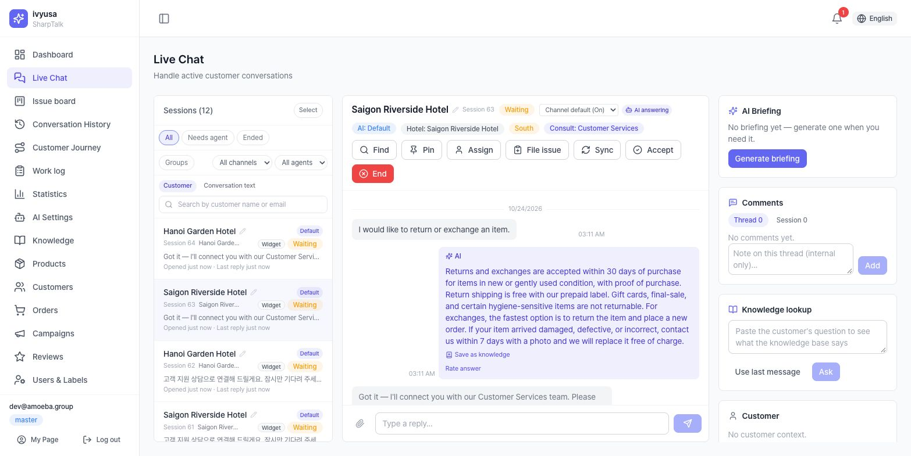
Alarm settings (personal)
Each person sets these under Alarm settings in the Alarm center or the 🔔 drawer.
| Item | Options |
|---|---|
| Popup | All alarms / Only those assigned to me (incl. everyone) / Off |
| Sound | On/off, Play |
| Browser desktop notifications | When turned on, the browser asks for permission |
| Email me when assigned |
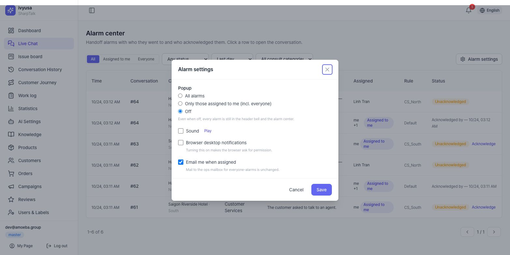
Even with popups off, every alarm stays in 🔔 and the Alarm center. Busy team leads should use Only those assigned to me.
Operations checklist
- All agents have accepted their invites (status
active) - Every agent has the Counsels label + a routing label (CS, Sales etc.) + a unit
- Consult categories for customers are Shown and have per-language names
- Each routing rule has the right consult category and region conditions and unit × label
- There is a default rule with no conditions at the bottom
- No rule card shows a warning
- All representative combinations (category × region) have been tested with Check routing
- A real request was made from the widget and the alarm reached the right agent
FAQ / Troubleshooting
- Q. A customer asked for an agent, but no consult category card appeared.
- Check that at least one consult category is Shown in [Agent handoff → Manage consult categories]. If none is, the chat connects directly without a card. The card doesn't reappear in a conversation where a category was already picked.
- Q. The alarm goes to someone else (or everyone), not the unit I set.
- Enter the same consult category and region in Check routing above the rules. It shows the skipped rules and why. Common causes: ① label chips used in the Topic row ② missing region condition ③ unit members haven't accepted their invites (0 people assignable) ④ rule order (a broader rule above matches first).
- Q. Alarms go to every agent.
- If no rule matches and Assigned agents is also empty, everyone is alerted. Add a default rule or set assigned agents.
- Q. I dismissed another agent's alarm — does that affect them?
- No. [Dismiss] only hides it on your screen; the assigned agent has to acknowledge it (stopping reminders) themselves.
- Q. The region is empty.
- The host app didn't send a region and the province name isn't in the region map. Run Update region map on the [Customers] screen (with the Go2Joy integration), or use a Province condition instead of a region condition.